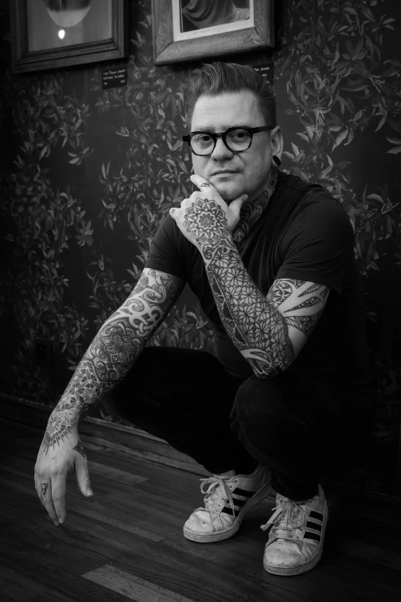
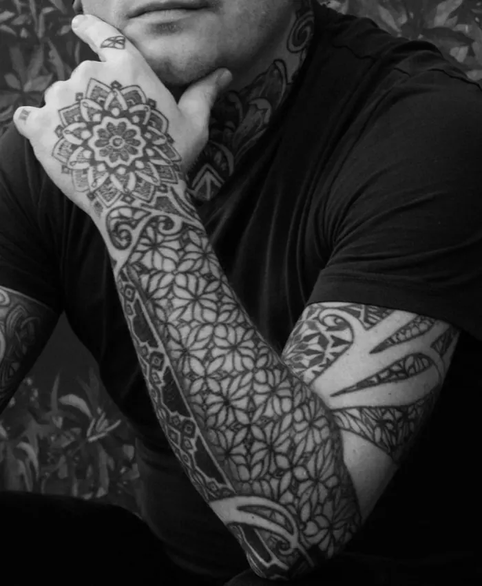
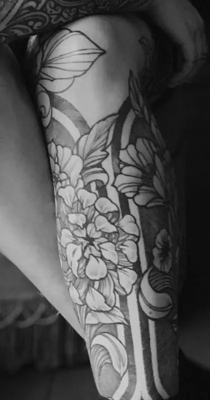
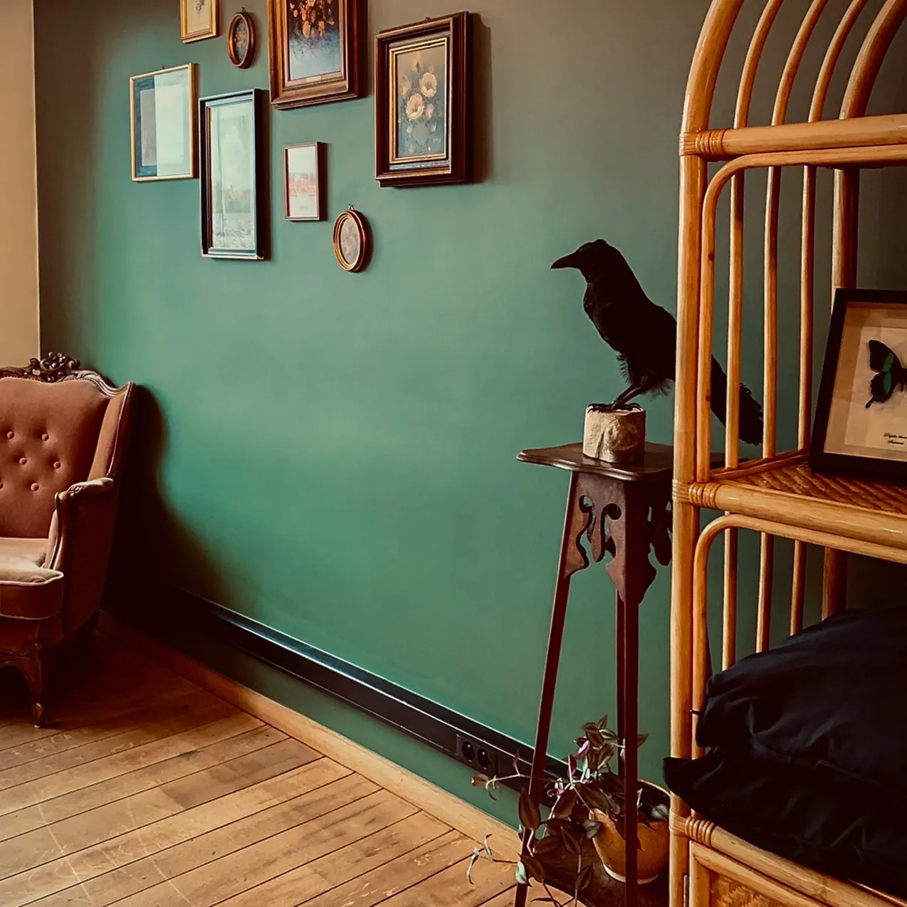
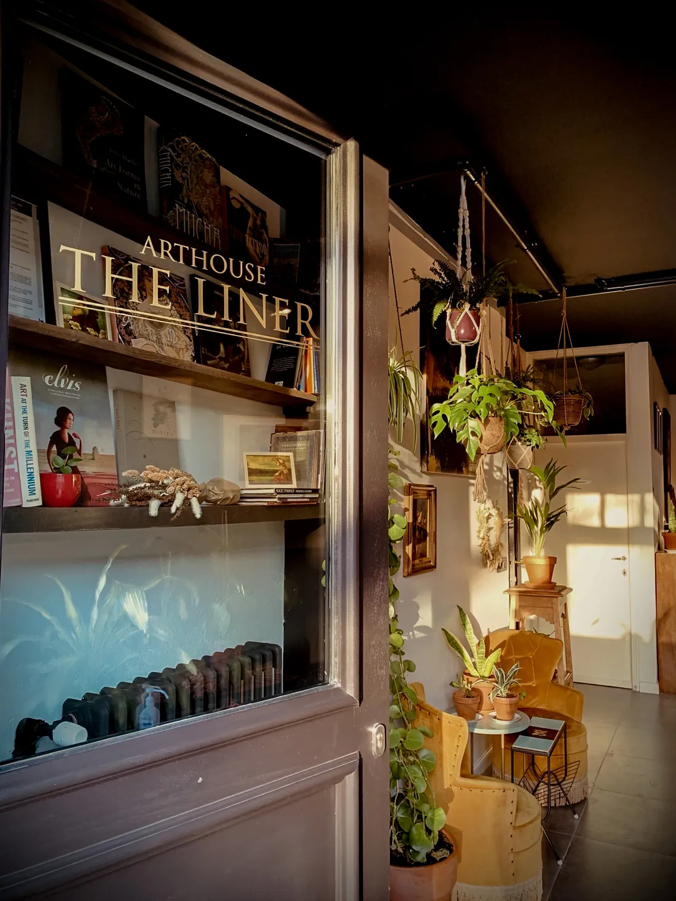

Ons werk
Vers van de tafel
Een greep uit ons werk. Elke tattoo is getekend voor die ene persoon, en voor niemand anders.



Nog meer werk zien?
Dagmar en Ines posten geregeld nieuw werk, schetsen en artwork.
Dagmar en Ines tekenen elke tattoo op maat, voor jou en voor de plek op je lichaam waar hij komt. Je wordt ontvangen in een warm huis vol eigen werk, met alle tijd voor je verhaal.
Enkel op afspraak, dus altijd tijd voor jou

Dagmar richtte The Liner op. Hij is verliefd op art nouveau en ornamentiek, en tekent naast tattoos ook strips en illustraties. Ines is mede-eigenaar en heeft een zwak voor lijnen, florale vormen en fijne details.
Samen maken we van elke afspraak iets rustigs. Geen haast, geen lopende band. Gewoon goed luisteren en dan tekenen tot het klopt.

Kom gerust met een vaag idee. We zoeken samen welke stijl bij jou past en waar hij het mooist zit.
Sleeves, backpieces en grote projecten die de vorm van je lichaam volgen.
Dagmar & InesIllustratief en gevoelig, van een figuur in zijn wereld tot een familieportret.
DagmarKleine, fijne tattoos en lettering, geplaatst met een vaste hand en veel geduld.
InesPrints, schilderijen, houten ornamentale juwelen en gezeefdrukte kledij van eigen hand.
Te zien in het arthouseEen greep uit ons werk. Elke tattoo is getekend voor die ene persoon, en voor niemand anders.


Dagmar en Ines posten geregeld nieuw werk, schetsen en artwork.
Een paar reviews die klanten op Google achterlieten. Ze zeggen het beter dan wij.
"Vandaag mijn allereerste tattoo laten zetten door Ines. Ik vertrok met een klein hartje, maar zij stelde me meteen volledig op mijn gemak. Wat een artiest. Ik ben zó tevreden met het eindresultaat: zo fijn, zo gedetailleerd, zo mooi. Duizendmaal dank ❤️"
"Ik heb met Dagmar mijn idee en moodboard besproken en hij heeft dit perfect vertaald in een prachtig design, dat hij dan freehand nog aangepast heeft om nog beter de vorm van mijn arm te volgen."
"Naast het prachtige interieur dat volhangt met eigen artwork van zowel Ines als Dagmar zijn het ook nog eens echte toppers in het plaatsen van tattoos."
We werken enkel op afspraak. Zo is er altijd ruimte en tijd voor jou, en nooit iemand die al zit te wachten.
Stuur ons je idee, een paar voorbeelden en de plek waar je hem wil.
Dagmar of Ines maakt een ontwerp op maat en we schaven tot het goed zit.
Je zet je in de zetel, wij doen de rest. Rustig, proper en zonder haast.
Je krijgt onze tips mee voor de nazorg, zodat je tattoo mooi heelt.
Een vraag, een idee of meteen een afspraak? Bel, stuur een berichtje of laat hieronder iets achter.

Ik maakte deze demo voor jullie om te tonen wat er kan. Na een kort gesprek maak ik er iets veel persoonlijkers van, helemaal naar jullie wens.
Vrijblijvend. Ik kom langs of we bellen.
Op maat, op jullie eigen domein.
Geen voorschot. Jullie betalen pas als alles klaar is.
Hosting, domeinnaam en kleine wijzigingen, zoals nieuwe openingsuren.
Omdat een voorbeeld meer zegt dan een mail. Zo zien jullie meteen wat er kan, en het kost jullie niets.
Nee. Het gesprek is vrijblijvend. Vinden jullie het niks, dan is het daarmee gedaan.
Na ons gesprek staat jullie site binnen 10 tot 14 dagen online.
Zeker. Jullie domeinnaam kan gewoon blijven, de nieuwe site komt in de plaats van de oude.
Nee, dat doe ik op basis van ons gesprek. Eigen foto's zijn mooi meegenomen, maar niet nodig om te starten.